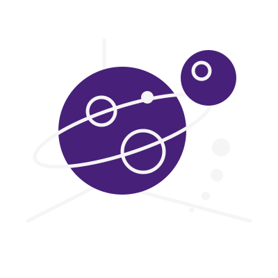
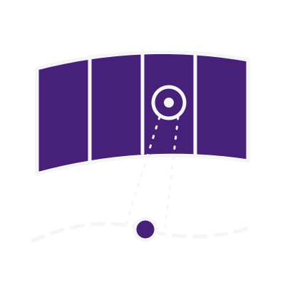
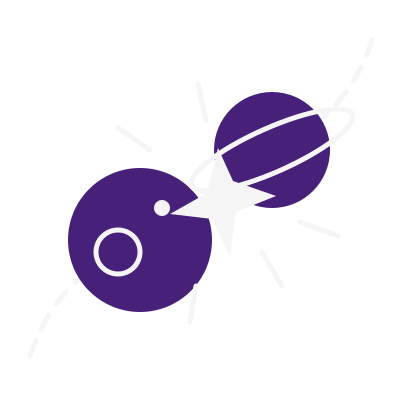
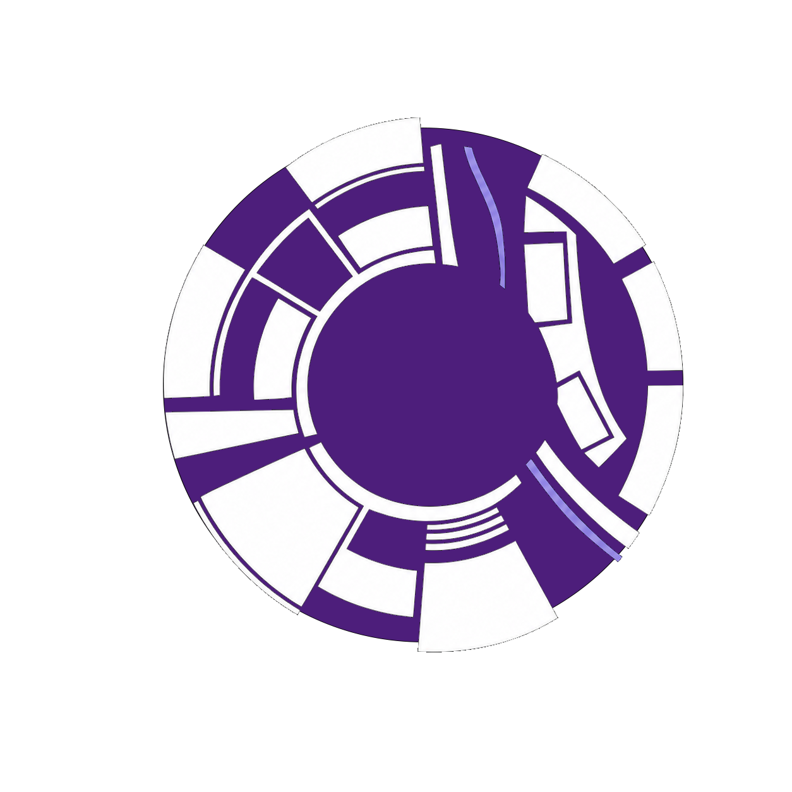
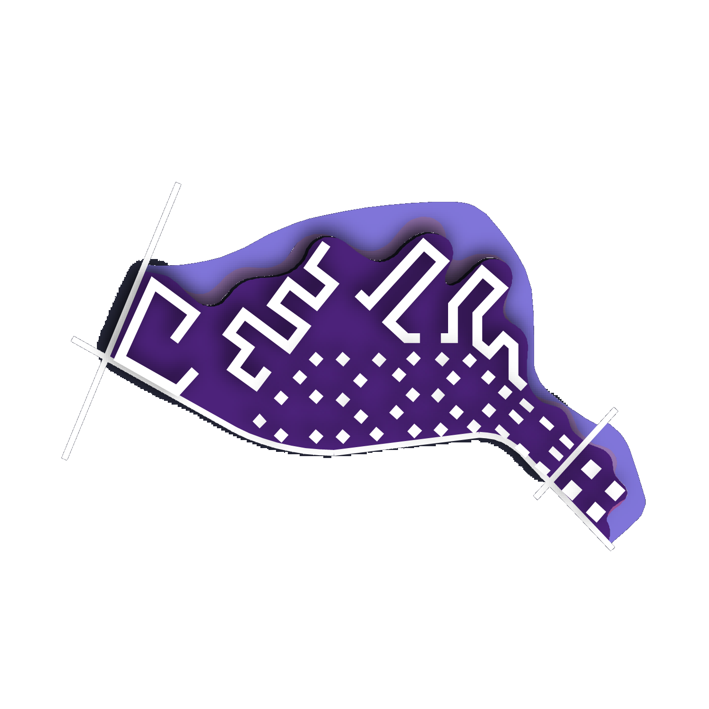
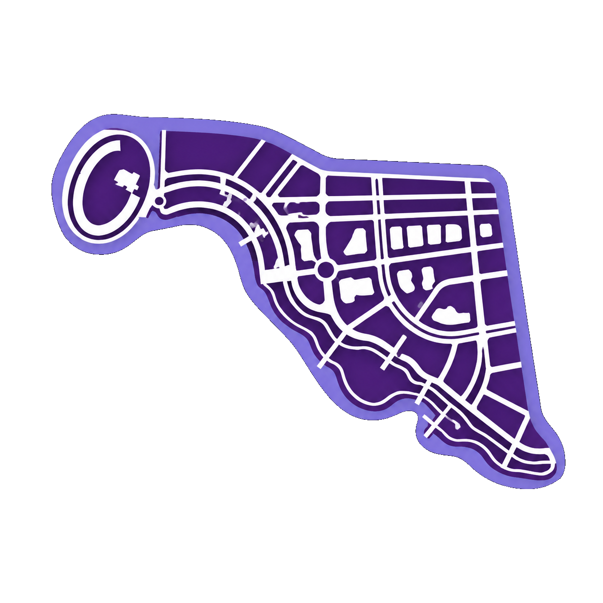

Projects
07 entries-

Immersive Commons Mixed reality · 2026 -

The Piccadilly Light VR simulation · 2024 -

The Planet Bang XR-urban interface · 2023 -

Urban Pixel Lab Generative video · 2025 -

Redefine Buffer Zone Urban design · 2016 -

Senior Loop Urban design · 2013 -

Jinji Lake Waterfront Landscape · 2012